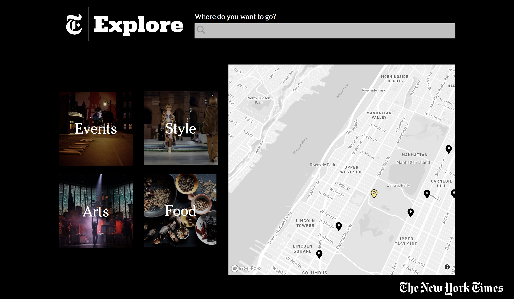
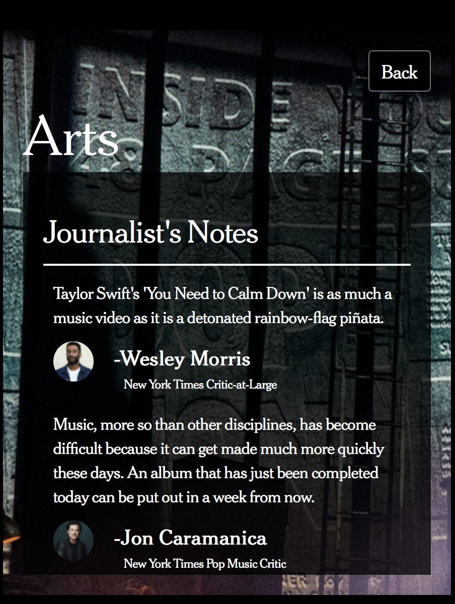
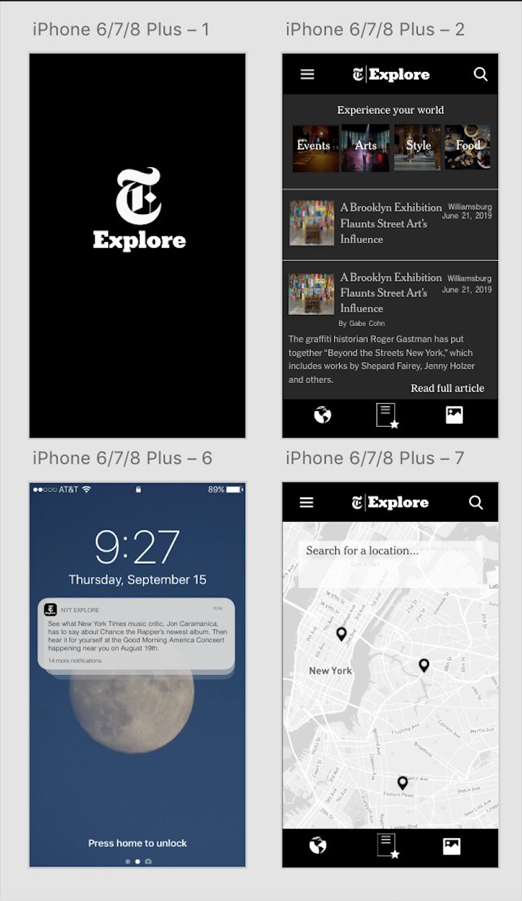

New York Times Explore
a stylized web application which gives users a chance to immerse themselves in Times journalism around the world

technologies: Sketch, React.js, HTML/CSS, GoLang, Google Analytics, MapBox, NYT Article Search API, Google Maps API
Check it out here!
There is a lot of journalism produced daily by the New York Times but often, only stories from the Washington or International desks make the front page of the Times, whether in print or digital. Our goal was to help the New York Times share everything it knows about a place and its culture with its readers and thus, we have NYT Explore.
A location based approach





